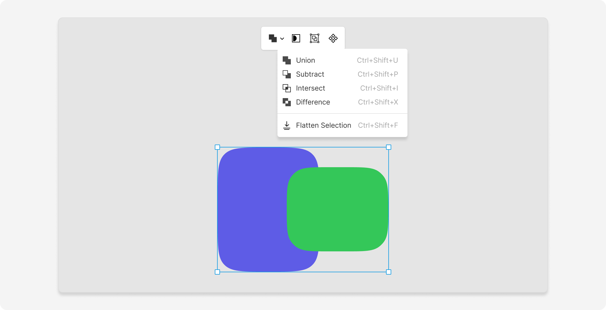

Make sure that you know everything about working with shapes in Lunacy
Shapes are types of layers in Lunacy, typically created with the Shape tools.
The tools include several pre-made shapes you can add by selecting the Shape icon on the toolbar — or simply by using shortcuts:
R — rectangleR, R — rounded rectangleL — lineL, L — arrowO — ovalO, O — triangleO, O, O — polygonO, O, O, O — starOnce you select the shape:
You can also make shapes using the Pen and Pencil tools. Create vector paths, then close them to make a shape outline you can then edit.
This section focuses on how to edit and transform the form of vector shapes using the standard layer Edit mode, on-canvas controls, Boolean operations, and the right panel. To learn about adding fills, borders, and effects to shapes and other layers, check out the Styling page.
The most basic way to edit a shape is to use Edit mode:
Enter. You can also double-click
the shape or select Enter again or click on an empty area on the canvas to exit Edit mode.Round the corners for any shape (except for the triangle) by dragging the handles at the corners of the shape on the canvas.
For rectangles or rounded rectangles, drag any of the handles at the corners to adjust their radius. To change the radius of an individual rectangle corner, hold Alt while dragging.
For stars and polygons, drag the handle below the topmost corner of the shape.
With the Arc editor, you can quickly create rings and semirings, design pie charts or other fancy circular elements.
Draw an oval and use the handles in the middle of the shape to adjust its sweep and ratio. Sweep creates a gap in the oval, while Ratio changes the oval into an arc. Once you change the sweep, the Start handle will also appear on the shape, indicating where the arc begins.
You can change the shape of stars and polygons right on the canvas without reaching into the right panel.
To change the ratio of a star, drag the handles at the inner intersection points of its sides.
To change the number of corners in a star or polygon, drag the handle below the shape's top right corner.
The transform options mirror the on-canvas controls:
Corner radius. Rounds the corners of a shape. Available for most of pre-made shapes, except for ovals, triangles, lines, and arrows.
Count. Adjusts the number of points for stars/the number of angles for polygons.
Ratio. Changes the ratio of a star or oval.
Sweep. Creates a gap in an oval.
Start. Determines the starting point of an arc made from an oval.
This section expands on transforming vector shapes and paths with Edit mode.
In general, vector editing is all about manipulations with points and paths:

Shift when clicking several points.
Delete.Use Boolean operations to combine shapes into more complex forms:

Ctrl + Shift + U / Ctrl + Shift + U).Ctrl + Shift + P / Ctrl + Shift + P).Ctrl + Shift + I / Ctrl + Shift + I).Ctrl + Shift + X / Ctrl + Shift + X).When you apply a Boolean operation, the selected shapes become a Boolean group, this is how it looks in the Layer list:
The icon next to the title of the shape layers indicates the type of the Boolean operation applied to the layer. Click it to open up a menu where you can select another operation or remove Boolean operations entirely.
You can select individual shapes within the group through the Layer list or on the canvas. If necessary, you can move and resize them on the canvas to modify the resulting shape.
The Flatten selection operation is another method of creating complex forms by combining two or more primitive shapes. It's similar to the Boolean Union operation, the difference being that the result of flattening is a single layer that cannot be disconnected.
The Flatten selection option appears on the context toolbar and is also available in the Layer section of the menu bar.
Use masks to display parts of layers and hide the rest.
To create a mask:
⌘ + M / Ctrl + M). The option is also available on the context menu.When you apply a mask, Lunacy creates a mask group:
You can select the mask shape right within the group and move, edit, or resize the mask.
To remove a mask, select the mask group in the Layer list or on the canvas and press Ctrl + M / ⌘ + M.
The Outline stroke command (Ctrl + Shift + O / ⌘ + Shift + O), when applied to shapes,
converts borders into separate layer. It appears on the context menu when you select
a shape that has a border (you can also find the option in the Layer
section of the menu bar).
You can rasterize any vector layer in Lunacy to create pixel images (when you need elements as simple images, for example).
To rasterize any shape (or path):
This option is also available in the Layer section of the menu bar.